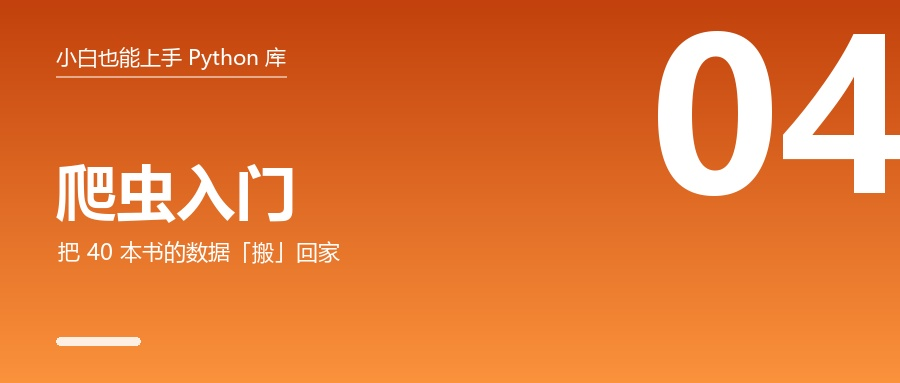

爬虫入门：我是怎么把 40 本书的数据"搬"回家的

🎬 场景：你想对比某个网站上所有商品的名称、价格、评价，但网站没有导出功能，也不给你 API。
于是你打开浏览器，复制、粘贴、复制、粘贴…… 复制到第 20 页时你想：这活儿应该让机器干。
这篇讲的就是"让机器替你点鼠标、抄数据"，而且全程合法合规。
一、先懂一件事：网页其实就是一段"带标签的文字"
你以为的网页：好看、能滚、能点。
爬虫看到的网页：一堆这样的标签。
<article class="product_pod">
<h3><a href="catalogue/a-light-in-the-attic_1000/index.html"
title="A Light in the Attic">A Light in the Attic</a></h3>
<p class="star-rating Three"></p>
<p class="price_color">£51.77</p>
</article>拆开看：
<article>是一个"盒子"class="product_pod"是这个盒子的"名字"- 书名在
<h3>里的title属性 - 价格在
class="price_color"里 - 星级藏在 class 名字
Three里（这是最阴的一个）
所以爬虫只干两件事：
- 把这段文字下载下来 → 用 requests
- 从里面挑出你要的 → 用 BeautifulSoup
二、第一步：requests，去"下载"网页
先自己手动看一眼要抓什么
打开目标网页，按 F12 打开开发者工具 → 切到 Elements → 用左上角小箭头点一下你要的数据。
这一步千万别跳过。新手最大的误区是：不看页面结构就开始写代码，写十行删九行。
写代码
pip install requestsimport requests
r = requests.get("https://books.toscrape.com/", timeout=15)
print("状态码:", r.status_code)
print("拿到多少字符:", len(r.text))
print(r.text[:80])实测输出：
状态码: 200
拿到多少字符: 51xxx
<!DOCTYPE html>
<!--[if lt IE 7]> <html class="no-js lt-ie9 lt-ie8"> <![endif]-->📌 网页长度会随网站更新变化，你看到的数字不一样是正常的。
只要 状态码是 200，就说明你成功了。
四个必须做的动作
| 必做 | 为什么 |
|---|---|
加 timeout=15 |
不加的话，网络卡住程序会永久挂住 |
写 headers={"User-Agent": ...} |
很多站点会拒绝默认的爬虫标识 |
检查 r.status_code |
403/404 时拿到的是错误页，直接解析会得到空结果，很难查 |
r.encoding = r.apparent_encoding |
中文站常是 GBK，不处理会乱码 |
状态码速查
| 码 | 意思 | 你该怎么做 |
|---|---|---|
| 200 | 成功 | 继续 |
| 403 | 被拒绝 | 补 User-Agent、检查是否违反条款 |
| 404 | 页面不存在 | 检查网址拼写 |
| 429 | 请求太快了 | 立刻降速！这是服务器在警告你 |
| 5xx | 服务器出错 | 稍后重试 |
三、第二步：BeautifulSoup，从网页里"挑"数据
pip install beautifulsoup4 lxml先跑一个离线例子（不联网也能看效果）
from bs4 import BeautifulSoup
html = """<div class="book"><h3>A 书</h3><p class="price">£51.77</p>
<p class="star-rating Three"></p></div>
<div class="book"><h3>B 书</h3><p class="price">£22.50</p></div>"""
soup = BeautifulSoup(html, "lxml")
for card in soup.select("div.book"):
title = card.select_one("h3").get_text(strip=True)
price = card.select_one("p.price").get_text(strip=True)
star = card.select_one("p.star-rating")
stars = star["class"][1] if star else "无评分" # ★ 星级藏在 class 里
print(title, "|", price, "|", stars)实测输出：
A 书 | £51.77 | Three
B 书 | £22.50 | 无评分选择器速查（背这几个就够）
| 写法 | 意思 |
|---|---|
select("article.product_pod") |
所有"标签是 article 且 class 有 product_pod"的 |
select_one("h3 a") |
只要第一个（取不到返回 None） |
select(".price_color") |
class 叫 price_color |
select("#main") |
id 叫 main |
tag.get_text(strip=True) |
取纯文字并去掉两端空白 |
tag["href"] |
取属性 |
🐛 坑王榜 #3：链接存下来全打不开
症状：存的链接是 catalogue/xxx/index.html，点开 404。
原因：网页里写的是相对路径，不是完整网址。
怎么修：用 urljoin 拼起来。
from urllib.parse import urljoin
完整网址 = urljoin("https://books.toscrape.com/catalogue/page-1.html",
"catalogue/xxx/index.html")
print(完整网址)四、第三步：存起来（sqlite3）
为什么不存 CSV？
| CSV | SQLite | |
|---|---|---|
| 追加写 | 要读出来再写回去，容易写乱 | 一行 INSERT 搞定 |
| 去重 | 自己想办法 | 主键 UNIQUE 自动搞定 |
| 查询 | 全读进内存 | SELECT WHERE 直接查 |
| 依赖 | 无 | 无（标准库自带） |
一个关键技巧：用网址当主键
import sqlite3
conn = sqlite3.connect("books.db")
conn.execute("""
CREATE TABLE IF NOT EXISTS books(
url TEXT PRIMARY KEY, -- ★ 网址做主键 = 天然去重
title TEXT,
price REAL
)""")
# 已存在就跳过（重复跑脚本不会产生重复数据）
conn.execute("INSERT OR IGNORE INTO books VALUES (?, ?, ?)",
(url, title, price))
conn.commit()⚠️ 永远用 ? 占位符传参，不要用 f-string 拼 SQL。虽然这里数据是自己抓的，但好习惯要从第一天养成。
五、把它们串起来：一个 25 行的完整爬虫
import requests, sqlite3, time
from bs4 import BeautifulSoup
from urllib.parse import urljoin
BASE = "https://books.toscrape.com/catalogue/page-1.html"
HEADERS = {"User-Agent": "StudyBot/1.0 (learning only)"}
conn = sqlite3.connect("books.db")
conn.execute("""CREATE TABLE IF NOT EXISTS books(
url TEXT PRIMARY KEY, title TEXT, price REAL)""")
url, page = BASE, 0
while url and page < 3: # 抓 3 页就停（别给人家添麻烦）
page += 1
r = requests.get(url, headers=HEADERS, timeout=15)
if r.status_code != 200:
print("失败:", r.status_code); break
soup = BeautifulSoup(r.text, "lxml")
for card in soup.select("article.product_pod"):
a = card.select_one("h3 a")
p = card.select_one("p.price_color")
if not (a and p):
continue # 缺数据就跳过，别让程序崩
price = float("".join(c for c in p.get_text() if c.isdigit() or c == "."))
conn.execute("INSERT OR IGNORE INTO books VALUES (?, ?, ?)",
(urljoin(url, a["href"]), a["title"], price))
conn.commit()
print("第", page, "页完成")
nxt = soup.select_one("li.next a")
url = urljoin(url, nxt["href"]) if nxt else None
time.sleep(1) # ★ 限速：每页停 1 秒
print("总共:", conn.execute("SELECT COUNT(*) FROM books").fetchone()[0], "本")
for row in conn.execute("SELECT title, price FROM books ORDER BY price DESC LIMIT 3"):
print(row)
conn.close()实测输出（我抓了 2 页共 40 本）：
第 1 页完成
第 2 页完成
总共: 40 本
('Our Band Could Be Your Life: Scenes from the American Indie Underground, 1981-1991', 57.25)
('Birdsong: A Story in Pictures', 54.64)
('Sapiens: A Brief History of Humankind', 54.23)顺便说：这一页第一本书是 《A Light in the Attic》，价格 £51.77，3 星；最便宜的是 《In Her Wake》£12.84 —— 这些都是我实际抓到的。
六、抓不到数据？可能是这两种情况
情况 1：页面是"JS 现算"的
你在浏览器里能看到内容，但 requests 抓到的 HTML 里啥也没有 —— 因为正文是 JavaScript 加载完后才生成的。
解决办法：用 playwright 开一个真浏览器。
pip install playwright
playwright install chromium # 第一次要下载浏览器，100 多 MBfrom playwright.sync_api import sync_playwright
with sync_playwright() as p:
browser = p.chromium.launch(headless=True) # headless=False 能看见浏览器
page = browser.new_page()
page.goto("https://quotes.toscrape.com/js/", wait_until="networkidle")
page.wait_for_selector(".quote") # ★ 等元素出现再读
print(page.locator(".quote .text").all_inner_texts()[:2])
browser.close()情况 2：要抓几万页，手写太乱
用 Scrapy（爬虫框架，自带调度、去重、并发、重试、断点续爬）。
新手可以先不学，等你有"抓一个网站"的真实需求了再上。
顺便配两个小助手：
| 库 | 干什么 |
|---|---|
| tenacity | 失败自动重试（网络抖动必备） |
| tqdm | 一行代码给循环加进度条 |
from tenacity import retry, stop_after_attempt, wait_fixed
@retry(stop=stop_after_attempt(3), wait=wait_fixed(2)) # 失败等 2 秒再试，共 3 次
def fetch(url):
r = requests.get(url, timeout=10)
r.raise_for_status() # 4xx/5xx 抛异常 → 触发重试
return r.text七、⚠️ 合规红线（这一段比技术更重要）
爬虫在国内有明确的法律边界。这三条必须记住：
✅ 可以做
- 抓公开的、不违反站点条款的数据
- 遵守
robots.txt（浏览器打开网站域名/robots.txt就能看到） - 控制频率：本文示例默认每页停 1 秒
- 有官方 API 就用 API，别爬页面
- 在专门的教学站点练手：books.toscrape.com（数据是假的）、quotes.toscrape.com、httpbin.org
❌ 绝对不能做
- 绕过登录 / 付费墙 / 验证码去拿非公开数据
- 抓个人信息（手机号、身份证、住址、聊天记录）—— 可能触犯《个人信息保护法》
- 高频请求打挂对方服务 —— 可能构成"破坏计算机信息系统"
- 抓来的数据转卖、公开传播
- 用来刷单、抢票、当水军
一句话判断法
"不登录、不付费，用浏览器正常就能看到"，而且你只少量、低频、不传播地用于学习 —— 基本安全。
其他情况，先查法律、先问授权。
🧰 附：爬虫三件套的「常用工具速查」
爬虫 90% 的代码，就是下面这三张表的组合。建议收藏这一段。
🌐 requests（发请求）
| 工具 | 干什么 | 典型写法 |
|---|---|---|
requests.get(url) |
拿网页 / 调接口 | 一定加 timeout=15 |
requests.post(url, json=…) |
提交数据 | 调 API、提交表单 |
headers={...} |
装成浏览器 | 写个 User-Agent |
params={"q":"x"} |
网址参数 | 自动拼 ?q=x |
r.status_code |
状态码 | 200 成功 / 403 被拒 / 429 太快 |
r.text / r.content |
文本 / 原始字节 | 中文乱码时用 content |
r.json() |
直接转成字典 | 接口返回 JSON 时 |
r.encoding = r.apparent_encoding |
修中文乱码 | 中文站必做 |
r.raise_for_status() |
出错就抛异常 | 配合重试 |
requests.Session() |
保持登录 / 复用连接 | 连续请求更快 |
stream=True + iter_content() |
下载大文件 | 一边下一边写盘 |
🍲 BeautifulSoup（从 HTML 里挑数据）
| 工具 | 干什么 | 典型写法 |
|---|---|---|
BeautifulSoup(html, "lxml") |
把 HTML 变成可查找对象 | lxml 比 html.parser 快 |
soup.select(选择器) |
取一列 | soup.select("article.product_pod") |
tag.select_one(选择器) |
取第一个 | 取不到返回 None |
.get_text(strip=True) |
取纯文字并去空白 | 最常用 |
tag["href"] / tag["title"] |
取属性 | 缺属性会报错，用 .get() |
tag.get("title") |
取属性（缺了返回 None） | 更安全 |
urljoin(当前网址, href) |
相对链接转绝对 | 否则存下来打不开 |
tag["class"] |
取 class 列表 | 星级常藏在 class 里 |
选择器速查：tag 标签名 ｜ .cls class ｜ #id id ｜ a b 后代 ｜ a > b 直接子元素 ｜ [attr] 有某属性
🗄 sqlite3（存数据）
| 工具 | 干什么 | 典型写法 |
|---|---|---|
sqlite3.connect("x.db") |
连数据库（文件不存在会自动建） | ":memory:" 是内存库 |
CREATE TABLE IF NOT EXISTS … |
建表 | 字段加 PRIMARY KEY 防重 |
cur.executemany(sql, 列表) |
批量插入 | 比一条条插快很多 |
? 占位符 |
传参（防注入） | execute(sql, (a, b)) |
INSERT OR IGNORE |
已存在就跳过 | 配主键去重 |
ON CONFLICT(url) DO UPDATE |
已存在就更新 | 增量更新 |
conn.commit() |
提交 | 不写等于没存 |
cur.fetchall() / fetchone() |
取结果 | 记得 conn.close() |
with sqlite3.connect(…) |
自动提交/回滚 | 推荐写法 |
🧰 进阶才需要的三个
| 库 | 什么时候用 | 一行示例 |
|---|---|---|
tenacity |
网络抖动，失败要自动重试 | @retry(stop=stop_after_attempt(3)) |
tqdm |
抓很多页，要进度条 | for u in tqdm(urls): |
playwright |
页面是 JS 渲染的，requests 抓不到 | page.goto(url); page.wait_for_selector(".item") |
scrapy |
要抓几万页，手写太乱 | 用框架自带调度 + 去重 |
📌 这篇你学到了
- 网页 = 带标签的文字；爬虫 = 下载 + 挑数据
requests：一定要加timeout、User-Agent、检查状态码BeautifulSoup：select挑元素，相对链接用 urljoin 转绝对sqlite3：用网址当主键，天然去重- 限速
time.sleep()，看到 429 立刻降速 - 三条合规红线
🎯 留个小作业
把上面那个爬虫改成抓 5 页，然后：
- 算一下所有书的平均价格
- 找出最贵的那 3 本
- 把结果存到一个新的表里
下一篇：《网络安全第一课：先学会保护自己》
👉 如果这篇让你第一次成功把网上的数据抓下来，点个「赞」，也把"合规三条"转发给正在学爬虫的朋友 —— 这可能是最有用的一段。
👉 关注我，下一篇讲安全：为什么不能用 MD5 存密码，以及程序员最容易犯的 3 个安全错误。